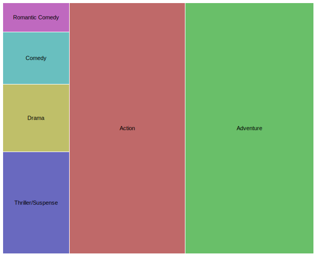
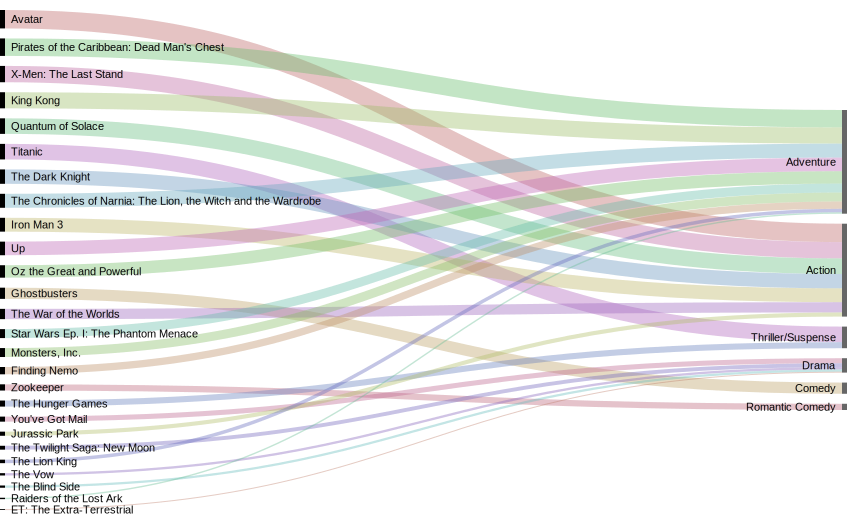
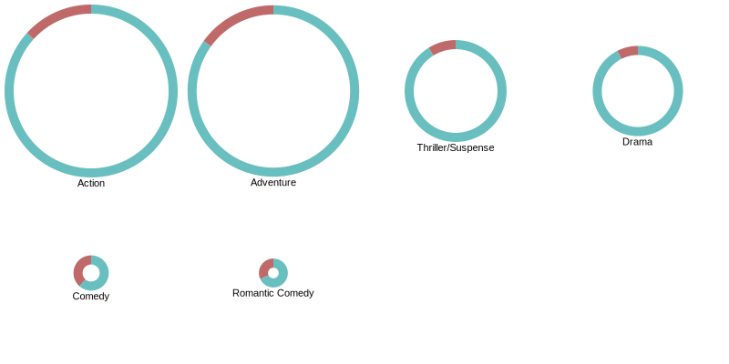
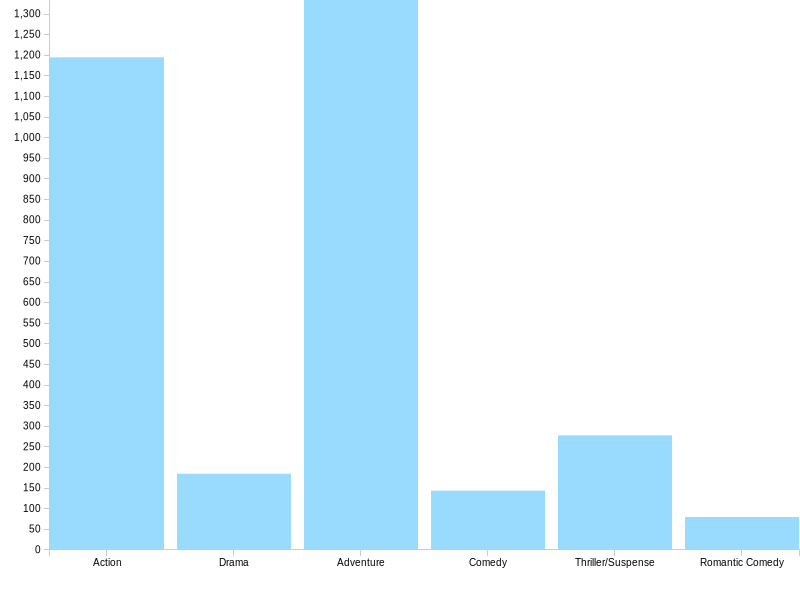
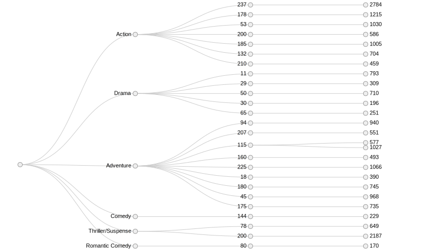
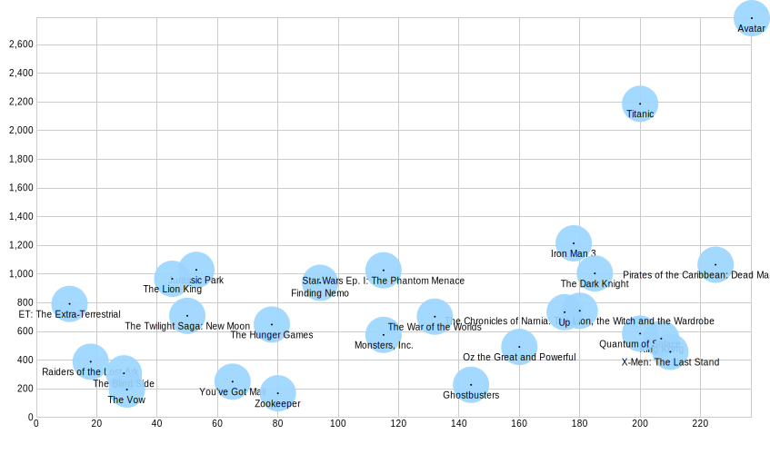

En donde la jerarquía la otorga el género de la película, el tamaño viene dado por el presupuesto y el color por la ganancia en la BoxOffice: Magenta: 170m, verde agua: 229m, ocre: 251m, rojo: 459m, verde: 735 y azul: 2185.
Películas derivan a su género correspondiente y su tamaño viene dado por su presupuesto.
En donde la división es por género, y en el diagrama el verde representa la ganancia v/s el rojo que representa el presupuesto.
En donde los datos contenidos corresponden a película y su ranking en IMDB.
En donde los datos contenidos corresponden al género y el presupuesto de las películas.
En donde los datos contenidos corresponden al género, presupuesto y las ganancias en la Box Office.
En donde se hace un versus entre las ganancias ubicadas en el eje Y, y al presupuesto en el eje de las X.
